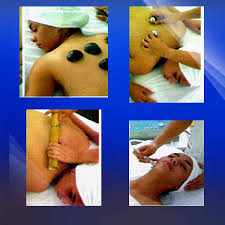
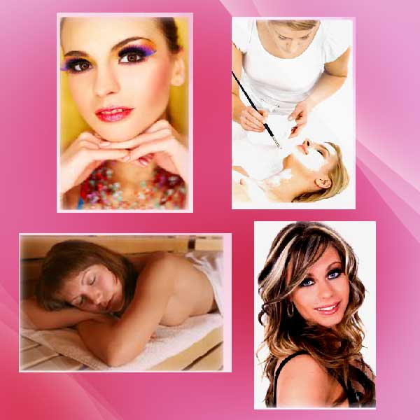

LICENCIATURA EN COSMETOLOGÍA
Natalia Sampayo Vazquez
¿Qué es la cosmetología?
Definición de Cosmetología
La cosmetología no es sólo poner maquillaje para embellecer un rostro, es una ciencia que va mucho más allá. Conozcamos todos los detalles sobre este mundo.
Lejos de ser simplemente la correcta aplicación de maquillajes (como muchos consideran a esta actividad), la cosmetología es una aplicación científica dependiente de la dermatología, cuyo principal campo de acción es la piel del rostro y de todo el cuerpo, con el objetivo de embellecerla de manera saludable.
En esta disciplina científica se toman en consideración temas como estado general de salud, condiciones médicas de la piel, pigmentación, alergias, y también asuntos como actividades laboral y social de la persona, su edad y su tratamiento rutinario de higiene y belleza.
Natalia Sampayo Vazquez
¿Qué hace un cosmetólogo?
En la primera consulta, el cosmetólogo hará una evaluación de la persona. Analizará su condición de salud y la de su piel, en un análisis detallado y específico. A partir de este conocimiento y del objetivo buscado, el profesional determinará el plan de tratamiento, en sesiones con técnicas y productos que buscarán embellecer, rejuvenecer, regenerar o curar la piel de afecciones como el acné, la celulitis, las manchas, coloraciones y otros tratamientos.
El cosmetólogo también te aconsejará un plan de prevención de males de la piel, y podrá asesorarte sobre su cuidado de la acción de los rayos solares y del tipo de alimentación que debes seguir para tener una piel tersa y libre de imperfecciones.
Conocimientos de un cosmetólogo
No cualquier persona que sepa aplicar cremas y productos puede llamarse "cosmetóloga". De hecho, la cosmetología involucra conocimientos y técnicas de la ciencia médica dermatológica, en cuanto a elementos, instrumental y también interacción entre compuestos.
Por eso, a la hora de elegir a un cosmetólogo o a un instituto que ofrezca este servicio, ten en cuenta que debe tratarse de alguien acreditado y experimentado, y no sólo que tenga acceso a los productos embellecedores de uso habitual.
Natalia Sampayo Vazquez
Licenciatura en Cosmetología
OBJETIVO
Formar especialistas en la cosmetología e Imagen Integral, capaces de integrar conocimientos y habilidades que le permitan colaborar en la promoción de la estética humana y en la atención a los problemas relacionados con la cosmetología en beneficio de las personas y de la sociedad.

PERFIL DEL EGRESADO
l finalizar el plan de estudios el alumno habrá adquirido los siguientes conocimientos, habilidades y actitudes:
- De la anatomía y fisiología del cuerpo humano para recomendar los tratamientos faciales y corporales adecuados.
- De las características de la piel, para proporcionar los tratamientos adecuados.
- De la nutrición y dietética humana para proporcionar una orientación integral acorde a los tratamientos deductivos y corporales.
- De la química cosmética para recomendar el uso adecuado de los cosméticos y tratamientos.
- Para intervenir en acciones de promoción de la salud y prevención de la enfermedad a través de la participación multidisciplinaria.
- Para elaborar programas de cosmetología y estética corporal acordes a las necesidades de la persona y la sociedad.
- Para gestionar servicios de cosmetología y estética corporal individual y colectiva a nivel institucional, industrial, empresarial, deportiva, etc.
- Respeto para si mismo y para los demás en las experiencias de desarrollo y crecimiento personal.
- Responsabilidad en el trabajo personal y profesional, para un eficiente desempeño.
- Solidaridad y justicia ante las personas con necesidad de protección y ayuda.
- Empatía hacia las personas que requieren ayuda profesional.
- Compromiso social en su labor como cosmetólogo.
- Honestidad en el desarrollo profesional.
- Ética profesional en la intervención profesional.
- Para relacionar los procesos bioquímicos y fisiológicos con los tratamientos faciales y corporales.
- Desarrollar programas, tratamientos y terapias faciales y corporales.
- Para proporcionar los tratamientos más efectivos faciales y corporales.
- Para proporcionar las terapias tradicionales, SPA y de vanguardia.
- Manejar la tecnología cosmética y sus productos a través de los tratamientos adecuados.
- Para manejar la asesoría de imagen y estética corporal.
- Para intervenir en acciones de promoción de la salud y la prevención de la enfermedad a través de la participación multidisciplinaria.
- Para gestionar el desarrollo de Centros Estéticos como Gimnasios, Hoteles, Líneas de Cosméticos y Gabinetes Personales.
PLAN DE ESTUDIOS
- Estética y Sociedad
- Anatomía y Fisiología Humana
- Introducción a la Química
- Belleza y Salud
- Cosmetología y Estética Corporal
- Nutrición y Salud
- Legislación y Cosmetología
- Química Cosmética
- Taller de Cultura de Belleza I
- Introducción a la Cosmiatría
- Introducción a la Limpieza Superficial del Rostro
- Biología Cutánea
- Metodología de la Investigación Cuantitativa
- Técnicas de Maquillaje
- Dermatología Cosmética
- Metodología de la Investigación Cualitativa
- Taller de Cultura de Belleza II
- Técnicas de Limpieza y Esterilización
- Técnicas de Maquillaje Social
- Estética Corporal Contemporánea
- Tratamiento de Manos
- Taller de Cultura y Belleza III
- Depilación Facial y Corporal
- Tecnología y Tratamientos Faciales
- Reflexología
- Tratamientos Capilares
- Microdermapigmentación
- Fitocosmética y Aromaterapia
- Técnica de Spa
- Tecnología y Tratamientos Corporales
- Fisioestética I
- Dietología del Individuo Sano
- Psicología
- Terapias Alternativas
- Alimentación y Salud
- Psicología y Docencia
- Diagnóstico y Estética Integral
- Personalidad y Estilo en el Vestir
- Técnicas de Depilación
- Higiene, Salud y Ética
- Masajes y Drenaje Linfático
- Personalidad y Estilo en el Vestir
- Cosmetología y Cirugía Plástica
- Administración y Gestión del Centro de Trabajo
- Seminario de Titulación
Natalia Sampayo Vazquez